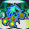

MENU >> Sonic Fan Club >> The most exciting Fan Fair on the 'net! *INFO PAGE* >>Info Page - SFCNews - Fan Games Club - Fan Art Club - Fan Fic Club - VMU Club - Hoaxers Club - Sonic Shout |
What is the Sonic Fan Club?
What is the Sonic Fan Club?
What do I need for the SFC?
Definition: 'Furry' - A term largely used in the Sonic community. It is an edited Sonic sprite to represent yourself. Basically a furry is 'you', within the community. This, for example, is Dreadknux:
OK then, I'll send in some of my stuff! What are the fan categories?
There are lots of fan categories to choose from, so if you have made a fan creation of each category, then don't hesitate to send them all in! Here are the categories you can send Fan stuff in for at present, and a brief description.
SFGC [Sonic Fan Game Club]:
SFAC [Sonic Fan Art Club]:
SFFC [Sonic Fan Fic Club]:
SFVM [Sonic Fan VM]:
SFHC [Sonic Fan Hoaxers Club]:
SFRC [Sonic Fan Review Club]:
Good god no! The Sonic Fan Club's aim is to cater for all aspects of Fan stuff. Although the categories mentioned are just the release zones, if you have a fan section which you believe will do well in the community then feel free to tell Dreadknux in the form.
Where can I send my stuff then?
Your form won't accept uploads. What do I do if I have a Fan Game etc to send in?
I still don't understand this section! Show me the light!
Welcome to the Sonic Fan Club! A Massive Fan database where fans of anything Sonic or Sega are invited! This part of the site, like the Community and the Interact Zone's before it, is where you can make your mark in the Sonic Fan Universe. Do you find making Sonic Fan Games interesting? Send some to the Stadium! Enjoy reviewing Sonic games, making VMU games and hacks? Then read this page, because this has all the info you need.
What do I need for the SFC?
OK then, I'll send in some of my stuff! What are the fan categories?
I've seen the categories, but are those sections all we are allowed to send into you?
Where can I send my stuff then?
Your form won't accept uploads. What do I do if I have a Fan Game etc to send in?
I still don't understand this section! Show me the light!
The Sonic Fan Club is more or less a part of the Sonic Stadium, where you send in anything related to Sonic the Hedgehog that you have created. These could range from anything, from hoaxes to Fan Games and even Fan Fiction stories. But, unlike most sites, the Sonic Fan Club is dedicated to ALL Fan aspects of creativity, so how about that?
Just anything Sonic related that you have worked on. The Sonic community is getting very massive, with fans of the blue spiky one making Fan Game Reviews, drawing pictures of them, making a game starring Sonic, or their own furry. The Sonic Fan Club is dedicated to all of these and much more.

an edited Knuckles sprite, but in my design, this sprite represents me, because it... well, it is me. Now you get it?
SFCNews:
SFCNews, when SFC opens officially, will be the place where Fan creators such as yourselves can tell Dreadknux about anything about new fan projects, so that he can put them up for the rest of the Sonic community to know about it. Whatever it is, So, whether it's the next SAGE, a new game or comic strip, or even a Sonic story, tell the rest of the world by filling in the form
The Sonic Fan Games Club, or will be more commonly known as SFGC, is a place where you can send in your own Fan Games, demos, and Dreadknux will review all the Fan Games sent in and give them a mark out of five. There is also a cheat section where Fan Game creators can send Dreadknux password codes etc. for their games, and I will publish them. As well as Fan Game press releases appearing in SFCNews, should a lot more info and screenshots be sent into me at some stage in its development, there will be a preview page of them. Click here to see the current previews section, dedicated to the last SAGExpo.
This is the section of the Sonic Fan Club where you can send in your talented Sonic related drawings. These can be hand-drawn or on computer, and can relate to official Sonic characters or furries. The artwork will be placed in this zone once SFC opens, in a grand gallery kind of thing.
For those not in the know, Sonic Fan Fictions are basically Sonic stories, kind of the type you'll find in STC or the Archie Comics, only by dedicated fans. You can send in your Fan Fics, and I will accept both written and cartoon fiction.
SFVM is a dedicated Fan VMU Zone, here fans can send in their fancy VM Animations, games, and save games, whether they be of Sonic or otherwise. You can also send in hacked save files, in order to get something in a game that was before quite impossible. So send in your VMU goods!
Hoaxing is the new comedy, as I once said just now. Yes, hoaxing is basically to get a Sonic sprite, background etc. and change it so that it looks believeable. An example is (but very boring) Knuckles in Sonic 1. Get your hoaxing skills up to scratch and send Dreadknux your great faking fair.
SFRC will soon be the place for Fans of Sonic to review their favourite, worst or OK-ish Sonic games. Sonic reviews aren't restricted to Sega games. They can be Sonic fan games (when SFGC is open), Fan Fics, Sonic the movie, adverts... OK, well, you know what I mean. So if you want to have something put off your chest, then say it in the form.I've seen the categories, but are those sections all we are allowed to send into you?
All text based Fan gear, such as reviews, Fan fics etc. you can send to me directly through the Universal Form. If it's sweet and short, then send it via form, however, if you have a 16-page Microsoft Word document of a Sonic Fan Fic, it's probably best that you send it to me via e-mail, as an attachment. Alternatively, if you already have a fan game or fan fic on the internet at the moment you can just tell Dreadknux the link to your Fan goods in the form. Now you have no reason not to send anything into SFC!
If you have a big chunky file to send to SFC, don't worry. Zip up your Fan Game or whatever, upload it to your e-mail site (i.e hotmail or something) then send it along with a description of what you're sending, who you are and your e-mail address to Dreadknux at this e-mail address. Alternatively, and this is the good bit, 'cos you can be lazy doing it this way - if you already have your Fan Game or whatever on the the internet, all you need to do is tell Dreadknux the URL of the Fan creation, with a description of what the thing is etc. This way you can use the form, and I'll do the rest!
On this page I have tried my best to keep the explanation of this great new affair as simple as possible. However, if you still don't have a clue about what the SFC does, how it works or why the hell am I telling you this about two months before, then feel free to put yourself out of your misery. Send a personal e-mail to Dreadknux. He will get back to you so you can understand and have a chance to take part.
*Send your Fan Game information to Dreadknux!*
dreadknux@knuckles.co.uk
Fill in the form!